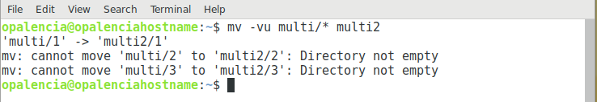

MoverRenombrar carpetas y archivos > mv¶
Nombre del comando: mv
Man page online: https://linux.die.net/man/1/mv
Descripción: Mover o renombrar carpetas y archivos de un lugar a otro. Importante: este comando sólo renombra un archivo o carpeta a la vez, si buscas renombar varios objetos a la vez, usa el comando rename.
Man page local: $ man mv o $ man mv > mv.txt
Instalado por defecto: Sí, al menos en Debian.
Algunas Opciones:
-f, --force No solicite antes de sobreescribir.
-v, --verbose Explique qué se está haciendo.
-u, --update Mover solo cuando el archivo SOURCE es más nuevo que el archivo de destino o cuando falta el archivo de destino. En palabras simples solo mueve si existe carpetas y archivos nuevos.
Ejemplo 1: $ mv -vf Games games2, renombra la carpeta Games a games2.
Ejemplo 2: $ mv -v Games/* games2, mueve todo el contenido de la carpeta Games a games2, no así la carpeta Games.
Ejemplo 3: $ mv -vu multi/* multi2, mueve todo el contenido de la carpeta multi a multi2, siempre y cuando, en la carpeta multi2 no existan, no así la carpeta multi.